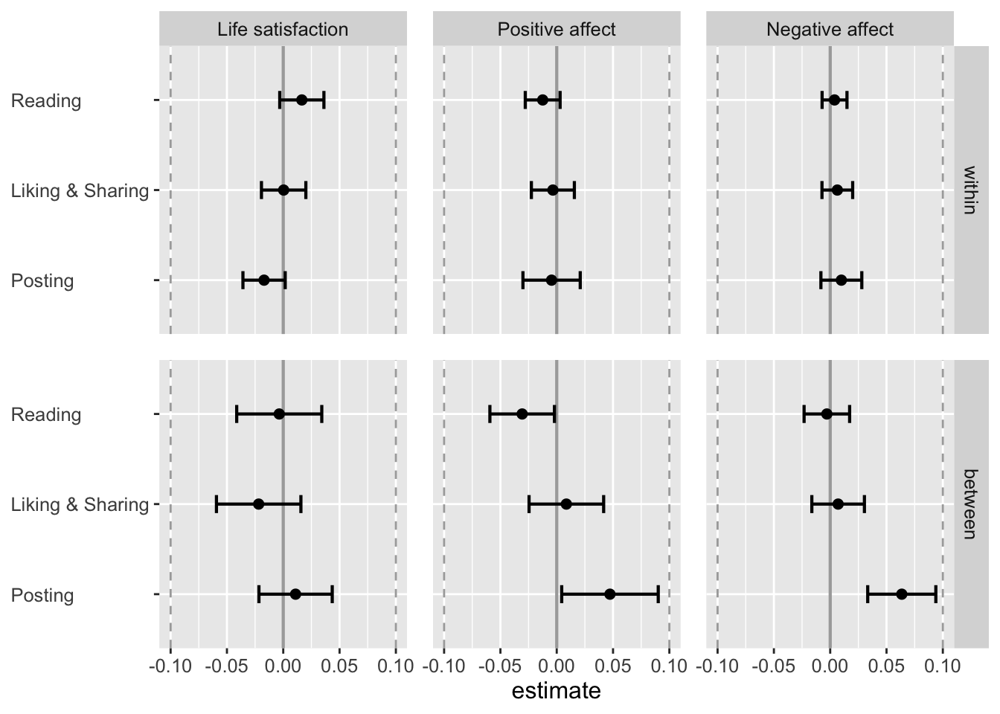
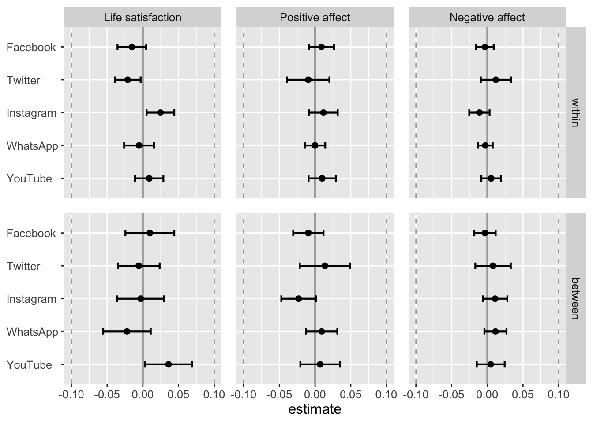

Additional analyses
Set-up
Load packages, and make repo replicable.
# install packages
# devtools::install_github("https://github.com/tdienlin/td@v.0.0.2.5")
# define packages
packages <- c("brms", "devtools", "GGally", "ggplot2",
"gridExtra", "kableExtra", "knitr", "lavaan", "lme4",
"magrittr", "mice", "mvnormalTest",
"PerFit", "psych", "quanteda.textstats", "semTools", "tidyverse")
# load packages
lapply(c(packages, "td"), library, character.only = TRUE)
# load workspace
load("data/workspace_1.RData")Standardized results
First, create standardized dataset.
d_long_std <- d_long_imp %>%
mutate(across(c(-id, -wave, -gender, -male, -born_aus, -born_aus_prnts, -edu_fac, -employment_fac, -res_vienna, -acc_bal, -acc_gar), scale))Then let’s rerun the analyses.
Life satisfaction
model_life_sat_lmer_std <- lmerTest::lmer(life_sat ~
(1 | id) + (1 | wave) +
soc_med_read_w + soc_med_like_share_w + soc_med_post_w +
soc_med_fb_w + soc_med_ig_w + soc_med_wa_w + soc_med_yt_w + soc_med_tw_w +
soc_med_read_b + soc_med_like_share_b + soc_med_post_b +
soc_med_fb_b + soc_med_ig_b + soc_med_wa_b + soc_med_yt_b + soc_med_tw_b +
age + male + born_aus + born_aus_prnts + edu_fac + employment_fac + health_b +
res_vienna + acc_bal + acc_gar + home_sqm +
med_txt_kro_b + med_txt_sta_b + med_txt_pre_b + med_txt_oes_b + med_txt_kur_b + med_txt_slz_b + med_txt_son_b +
med_vid_orf_b + med_vid_pri_b +
risk_prop_b + loc_cntrl_int_m_b +
act_wrk_w + act_spo_w + act_frn_w + act_sho_w + act_pet_w +
act_wrk_b + act_spo_b + act_frn_b + act_sho_b + act_pet_b +
sat_dem_w + sat_dem_b
, data = d_long_std)
summary(model_life_sat_lmer_std)## Linear mixed model fit by REML. t-tests use Satterthwaite's method ['lmerModLmerTest']
## Formula: life_sat ~ (1 | id) + (1 | wave) + soc_med_read_w + soc_med_like_share_w + soc_med_post_w + soc_med_fb_w + soc_med_ig_w + soc_med_wa_w +
## soc_med_yt_w + soc_med_tw_w + soc_med_read_b + soc_med_like_share_b + soc_med_post_b + soc_med_fb_b + soc_med_ig_b + soc_med_wa_b +
## soc_med_yt_b + soc_med_tw_b + age + male + born_aus + born_aus_prnts + edu_fac + employment_fac + health_b + res_vienna + acc_bal +
## acc_gar + home_sqm + med_txt_kro_b + med_txt_sta_b + med_txt_pre_b + med_txt_oes_b + med_txt_kur_b + med_txt_slz_b + med_txt_son_b +
## med_vid_orf_b + med_vid_pri_b + risk_prop_b + loc_cntrl_int_m_b + act_wrk_w + act_spo_w + act_frn_w + act_sho_w + act_pet_w +
## act_wrk_b + act_spo_b + act_frn_b + act_sho_b + act_pet_b + sat_dem_w + sat_dem_b
## Data: d_long_std
##
## REML criterion at convergence: 19231
##
## Scaled residuals:
## Min 1Q Median 3Q Max
## -4.369 -0.372 0.137 0.527 4.150
##
## Random effects:
## Groups Name Variance Std.Dev.
## id (Intercept) 0.22459 0.474
## wave (Intercept) 0.00203 0.045
## Residual 0.55297 0.744
## Number of obs: 7545, groups: id, 2750; wave, 21
##
## Fixed effects:
## Estimate Std. Error df t value Pr(>|t|)
## (Intercept) 0.193486 0.120415 2320.116372 1.61 0.10823
## soc_med_read_w 0.016503 0.010003 4907.482708 1.65 0.09905 .
## soc_med_like_share_w 0.000361 0.010055 5100.571523 0.04 0.97136
## soc_med_post_w -0.017029 0.009573 5123.714628 -1.78 0.07532 .
## soc_med_fb_w -0.015401 0.010249 5122.658065 -1.50 0.13297
## soc_med_ig_w 0.024657 0.009904 5134.769536 2.49 0.01282 *
## soc_med_wa_w -0.005242 0.010705 5128.663916 -0.49 0.62442
## soc_med_yt_w 0.008979 0.010112 5104.649946 0.89 0.37462
## soc_med_tw_w -0.021187 0.009228 5165.698974 -2.30 0.02171 *
## soc_med_read_b -0.003558 0.019263 2916.644373 -0.18 0.85347
## soc_med_like_share_b -0.021817 0.019124 3070.742546 -1.14 0.25402
## soc_med_post_b 0.010952 0.016598 3163.331207 0.66 0.50940
## soc_med_fb_b 0.009841 0.017470 2773.222197 0.56 0.57326
## soc_med_ig_b -0.002973 0.016756 2888.666439 -0.18 0.85919
## soc_med_wa_b -0.022227 0.016976 2648.677495 -1.31 0.19054
## soc_med_yt_b 0.035999 0.016864 2781.545387 2.13 0.03288 *
## soc_med_tw_b -0.005652 0.014869 2682.817293 -0.38 0.70389
## age 0.036150 0.024921 2608.670041 1.45 0.14702
## male 0.028687 0.029493 2510.451563 0.97 0.33080
## born_aus -0.043184 0.053195 2729.330024 -0.81 0.41697
## born_aus_prnts 0.009044 0.017906 2551.289875 0.51 0.61356
## edu_facBachelor 0.102997 0.076275 2585.403200 1.35 0.17703
## edu_facHigh school 0.023641 0.057084 2719.749431 0.41 0.67880
## edu_facMaster 0.027388 0.064069 2447.892885 0.43 0.66907
## edu_facMiddle school 0.023380 0.057003 2773.743869 0.41 0.68173
## edu_facNo degree 0.446886 0.165507 2162.609743 2.70 0.00699 **
## edu_facPhD 0.026914 0.135914 2275.988026 0.20 0.84305
## edu_facState college -0.081520 0.091683 2632.489172 -0.89 0.37401
## edu_facTechnical school 0.015626 0.044213 2641.988329 0.35 0.72379
## edu_facVocational school 0.058655 0.056399 2454.312878 1.04 0.29844
## employment_facIncapacitated 0.074312 0.156070 3061.864235 0.48 0.63400
## employment_facIndustrie -0.279076 0.102419 2498.371282 -2.72 0.00648 **
## employment_facParental Leave -0.121259 0.134091 2560.276976 -0.90 0.36592
## employment_facPublic service -0.233600 0.105520 2496.991025 -2.21 0.02693 *
## employment_facRetired -0.249584 0.103699 2408.796561 -2.41 0.01617 *
## employment_facSelf-employed -0.377521 0.113861 2478.880245 -3.32 0.00093 ***
## employment_facStudent -0.194596 0.111428 2622.494636 -1.75 0.08086 .
## employment_facUnemployed -0.431592 0.114177 2481.737804 -3.78 0.00016 ***
## health_b 0.167946 0.015174 2843.626411 11.07 < 0.0000000000000002 ***
## res_vienna 0.055621 0.035797 2440.059712 1.55 0.12036
## acc_bal -0.001686 0.028743 2470.510297 -0.06 0.95324
## acc_gar 0.009787 0.034547 2476.933677 0.28 0.77698
## home_sqm 0.050065 0.015037 2677.117209 3.33 0.00088 ***
## med_txt_kro_b 0.037135 0.015535 2403.422384 2.39 0.01691 *
## med_txt_sta_b 0.002404 0.017192 2611.523078 0.14 0.88882
## med_txt_pre_b 0.011591 0.017224 2722.909170 0.67 0.50102
## med_txt_oes_b -0.005887 0.015437 2552.736730 -0.38 0.70298
## med_txt_kur_b 0.016520 0.016486 2487.349215 1.00 0.31641
## med_txt_slz_b 0.000754 0.014260 2646.379826 0.05 0.95785
## med_txt_son_b -0.002222 0.013927 2542.962376 -0.16 0.87324
## med_vid_orf_b -0.000254 0.016680 2602.667334 -0.02 0.98787
## med_vid_pri_b 0.005656 0.015934 2521.016386 0.35 0.72263
## risk_prop_b 0.044046 0.014734 2852.041312 2.99 0.00282 **
## loc_cntrl_int_m_b 0.306238 0.015632 2775.352658 19.59 < 0.0000000000000002 ***
## act_wrk_w 0.028580 0.009580 5687.260374 2.98 0.00286 **
## act_spo_w 0.002817 0.009288 6367.821712 0.30 0.76169
## act_frn_w 0.016424 0.011154 1844.704008 1.47 0.14107
## act_sho_w 0.014369 0.009769 6306.043435 1.47 0.14136
## act_pet_w -0.012472 0.008993 6495.675403 -1.39 0.16553
## act_wrk_b 0.032220 0.017813 2759.745169 1.81 0.07060 .
## act_spo_b 0.035624 0.015004 2643.873708 2.37 0.01765 *
## act_frn_b 0.027420 0.015159 2958.701150 1.81 0.07058 .
## act_sho_b -0.004956 0.014691 2714.273496 -0.34 0.73587
## act_pet_b 0.016222 0.013554 2423.512362 1.20 0.23150
## sat_dem_w 0.046082 0.009287 3095.322698 4.96 0.00000074 ***
## sat_dem_b 0.132555 0.014720 2510.470518 9.01 < 0.0000000000000002 ***
## ---
## Signif. codes: 0 '***' 0.001 '**' 0.01 '*' 0.05 '.' 0.1 ' ' 1Positive affect
model_aff_pos_lmer_std <- lmerTest::lmer(aff_pos_fs ~
(1 | id) + (1 | wave) +
soc_med_read_w + soc_med_like_share_w + soc_med_post_w +
soc_med_fb_w + soc_med_ig_w + soc_med_wa_w + soc_med_yt_w + soc_med_tw_w +
soc_med_read_b + soc_med_like_share_b + soc_med_post_b +
soc_med_fb_b + soc_med_ig_b + soc_med_wa_b + soc_med_yt_b + soc_med_tw_b +
age + male + born_aus + born_aus_prnts + edu_fac + employment_fac + health_b +
res_vienna + acc_bal + acc_gar + home_sqm +
med_txt_kro_b + med_txt_sta_b + med_txt_pre_b + med_txt_oes_b + med_txt_kur_b + med_txt_slz_b + med_txt_son_b +
med_vid_orf_b + med_vid_pri_b +
risk_prop_b + loc_cntrl_int_m_b +
act_wrk_w + act_spo_w + act_frn_w + act_sho_w + act_pet_w +
act_wrk_b + act_spo_b + act_frn_b + act_sho_b + act_pet_b +
sat_dem_w + sat_dem_b
, data = d_long_imp)
summary(model_aff_pos_lmer_std)## Linear mixed model fit by REML. t-tests use Satterthwaite's method ['lmerModLmerTest']
## Formula: aff_pos_fs ~ (1 | id) + (1 | wave) + soc_med_read_w + soc_med_like_share_w + soc_med_post_w + soc_med_fb_w + soc_med_ig_w + soc_med_wa_w +
## soc_med_yt_w + soc_med_tw_w + soc_med_read_b + soc_med_like_share_b + soc_med_post_b + soc_med_fb_b + soc_med_ig_b + soc_med_wa_b +
## soc_med_yt_b + soc_med_tw_b + age + male + born_aus + born_aus_prnts + edu_fac + employment_fac + health_b + res_vienna + acc_bal +
## acc_gar + home_sqm + med_txt_kro_b + med_txt_sta_b + med_txt_pre_b + med_txt_oes_b + med_txt_kur_b + med_txt_slz_b + med_txt_son_b +
## med_vid_orf_b + med_vid_pri_b + risk_prop_b + loc_cntrl_int_m_b + act_wrk_w + act_spo_w + act_frn_w + act_sho_w + act_pet_w +
## act_wrk_b + act_spo_b + act_frn_b + act_sho_b + act_pet_b + sat_dem_w + sat_dem_b
## Data: d_long_imp
##
## REML criterion at convergence: 14854
##
## Scaled residuals:
## Min 1Q Median 3Q Max
## -4.679 -0.550 -0.021 0.554 4.762
##
## Random effects:
## Groups Name Variance Std.Dev.
## id (Intercept) 0.26140 0.5113
## wave (Intercept) 0.00368 0.0606
## Residual 0.25154 0.5015
## Number of obs: 7545, groups: id, 2750; wave, 21
##
## Fixed effects:
## Estimate Std. Error df t value Pr(>|t|)
## (Intercept) -0.6526773 0.1689184 2717.0226866 -3.86 0.00011 ***
## soc_med_read_w -0.0124633 0.0078877 5026.6126744 -1.58 0.11415
## soc_med_like_share_w -0.0034185 0.0097359 4999.0160214 -0.35 0.72551
## soc_med_post_w -0.0045671 0.0129754 5012.9703901 -0.35 0.72486
## soc_med_fb_w 0.0090351 0.0088651 5009.3413667 1.02 0.30817
## soc_med_ig_w 0.0117619 0.0101665 5024.0277749 1.16 0.24736
## soc_med_wa_w -0.0000373 0.0072990 5015.7209765 -0.01 0.99593
## soc_med_yt_w 0.0099324 0.0097300 5000.5658595 1.02 0.30740
## soc_med_tw_w -0.0094885 0.0151058 5046.8942961 -0.63 0.52994
## soc_med_read_b -0.0306863 0.0146174 2965.4543908 -2.10 0.03587 *
## soc_med_like_share_b 0.0085526 0.0168905 3063.5179450 0.51 0.61264
## soc_med_post_b 0.0472801 0.0218602 3117.3145674 2.16 0.03063 *
## soc_med_fb_b -0.0094014 0.0108225 2869.5916379 -0.87 0.38509
## soc_med_ig_b -0.0229298 0.0124026 2932.7793277 -1.85 0.06459 .
## soc_med_wa_b 0.0093036 0.0111866 2797.5092425 0.83 0.40566
## soc_med_yt_b 0.0071263 0.0141442 2869.2849413 0.50 0.61442
## soc_med_tw_b 0.0138065 0.0179896 2820.2319450 0.77 0.44287
## age 0.0019804 0.0013324 2834.6641098 1.49 0.13730
## male 0.1133019 0.0265848 2699.6278376 4.26 0.00002096351844 ***
## born_aus -0.0106653 0.0474367 2882.3484053 -0.22 0.82213
## born_aus_prnts -0.0217556 0.0161012 2752.7760003 -1.35 0.17675
## edu_facBachelor 0.0495394 0.0685266 2745.2061463 0.72 0.46979
## edu_facHigh school 0.0211310 0.0509747 2847.7987117 0.41 0.67851
## edu_facMaster -0.0608854 0.0579362 2646.1306315 -1.05 0.29340
## edu_facMiddle school 0.0369281 0.0507743 2905.9600280 0.73 0.46710
## edu_facNo degree 0.2736128 0.1517428 2469.8272131 1.80 0.07149 .
## edu_facPhD -0.0166252 0.1241092 2488.2416670 -0.13 0.89345
## edu_facState college 0.1535849 0.0821671 2795.4982103 1.87 0.06170 .
## edu_facTechnical school 0.0354051 0.0395849 2844.9867081 0.89 0.37118
## edu_facVocational school -0.0050146 0.0509751 2663.4705698 -0.10 0.92164
## employment_facIncapacitated -0.0851909 0.1366105 3352.3236132 -0.62 0.53293
## employment_facIndustrie -0.2347696 0.0923034 2715.3169687 -2.54 0.01103 *
## employment_facParental Leave -0.0476175 0.1202805 2829.5914685 -0.40 0.69222
## employment_facPublic service -0.2250237 0.0951122 2709.2583560 -2.37 0.01806 *
## employment_facRetired -0.1129814 0.0938329 2653.5829433 -1.20 0.22867
## employment_facSelf-employed -0.2760256 0.1027220 2689.1419332 -2.69 0.00725 **
## employment_facStudent -0.2302517 0.0998230 2807.7262252 -2.31 0.02115 *
## employment_facUnemployed -0.1947224 0.1030189 2686.0260988 -1.89 0.05884 .
## health_b 0.2520524 0.0205858 2938.9100868 12.24 < 0.0000000000000002 ***
## res_vienna -0.0178660 0.0323666 2680.0906685 -0.55 0.58100
## acc_bal -0.0429201 0.0259648 2664.9840078 -1.65 0.09845 .
## acc_gar -0.0146618 0.0311798 2692.9213066 -0.47 0.63822
## home_sqm 0.0185923 0.0062022 2852.8471480 3.00 0.00274 **
## med_txt_kro_b -0.0082224 0.0108569 2602.6967518 -0.76 0.44891
## med_txt_sta_b -0.0197385 0.0138017 2762.1287550 -1.43 0.15279
## med_txt_pre_b 0.0073644 0.0182742 2837.3692859 0.40 0.68699
## med_txt_oes_b -0.0008572 0.0134061 2716.2192941 -0.06 0.94902
## med_txt_kur_b 0.0281583 0.0150632 2669.7400285 1.87 0.06169 .
## med_txt_slz_b 0.0283852 0.0188016 2791.9631695 1.51 0.13123
## med_txt_son_b 0.0297216 0.0106429 2712.8840472 2.79 0.00526 **
## med_vid_orf_b -0.0255863 0.0119568 2753.6931512 -2.14 0.03245 *
## med_vid_pri_b 0.0089244 0.0119082 2692.7060907 0.75 0.45366
## risk_prop_b -0.0037844 0.0077669 2928.0622039 -0.49 0.62612
## loc_cntrl_int_m_b 0.6493392 0.0332357 2870.3400433 19.54 < 0.0000000000000002 ***
## act_wrk_w 0.0159524 0.0077781 5716.4053614 2.05 0.04032 *
## act_spo_w 0.0685985 0.0095433 5805.2064714 7.19 0.00000000000074 ***
## act_frn_w 0.0358526 0.0120304 4350.8579962 2.98 0.00290 **
## act_sho_w 0.0513572 0.0119415 5818.7825033 4.30 0.00001730069972 ***
## act_pet_w 0.0280012 0.0116443 5955.8835781 2.40 0.01622 *
## act_wrk_b 0.0349977 0.0125108 2926.9843776 2.80 0.00519 **
## act_spo_b 0.1463879 0.0145738 2786.7919071 10.04 < 0.0000000000000002 ***
## act_frn_b 0.0976696 0.0228425 3067.3560026 4.28 0.00001962779396 ***
## act_sho_b 0.0250022 0.0214675 2829.6078238 1.16 0.24426
## act_pet_b 0.0175615 0.0097747 2615.6383882 1.80 0.07251 .
## sat_dem_w 0.0318664 0.0100964 5318.4155254 3.16 0.00161 **
## sat_dem_b 0.0434876 0.0139436 2686.4181039 3.12 0.00184 **
## ---
## Signif. codes: 0 '***' 0.001 '**' 0.01 '*' 0.05 '.' 0.1 ' ' 1Negative Affect
model_aff_neg_lmer_std <- lmerTest::lmer(aff_neg_fs ~
(1 | id) + (1 | wave) +
soc_med_read_w + soc_med_like_share_w + soc_med_post_w +
soc_med_fb_w + soc_med_ig_w + soc_med_wa_w + soc_med_yt_w + soc_med_tw_w +
soc_med_read_b + soc_med_like_share_b + soc_med_post_b +
soc_med_fb_b + soc_med_ig_b + soc_med_wa_b + soc_med_yt_b + soc_med_tw_b +
age + male + born_aus + born_aus_prnts + edu_fac + employment_fac + health_b +
res_vienna + acc_bal + acc_gar + home_sqm +
med_txt_kro_b + med_txt_sta_b + med_txt_pre_b + med_txt_oes_b + med_txt_kur_b + med_txt_slz_b + med_txt_son_b +
med_vid_orf_b + med_vid_pri_b +
risk_prop_b + loc_cntrl_int_m_b +
act_wrk_w + act_spo_w + act_frn_w + act_sho_w + act_pet_w +
act_wrk_b + act_spo_b + act_frn_b + act_sho_b + act_pet_b +
sat_dem_w + sat_dem_b
, data = d_long_imp)
summary(model_aff_neg_lmer_std)## Linear mixed model fit by REML. t-tests use Satterthwaite's method ['lmerModLmerTest']
## Formula: aff_neg_fs ~ (1 | id) + (1 | wave) + soc_med_read_w + soc_med_like_share_w + soc_med_post_w + soc_med_fb_w + soc_med_ig_w + soc_med_wa_w +
## soc_med_yt_w + soc_med_tw_w + soc_med_read_b + soc_med_like_share_b + soc_med_post_b + soc_med_fb_b + soc_med_ig_b + soc_med_wa_b +
## soc_med_yt_b + soc_med_tw_b + age + male + born_aus + born_aus_prnts + edu_fac + employment_fac + health_b + res_vienna + acc_bal +
## acc_gar + home_sqm + med_txt_kro_b + med_txt_sta_b + med_txt_pre_b + med_txt_oes_b + med_txt_kur_b + med_txt_slz_b + med_txt_son_b +
## med_vid_orf_b + med_vid_pri_b + risk_prop_b + loc_cntrl_int_m_b + act_wrk_w + act_spo_w + act_frn_w + act_sho_w + act_pet_w +
## act_wrk_b + act_spo_b + act_frn_b + act_sho_b + act_pet_b + sat_dem_w + sat_dem_b
## Data: d_long_imp
##
## REML criterion at convergence: 9758
##
## Scaled residuals:
## Min 1Q Median 3Q Max
## -4.066 -0.438 -0.085 0.306 5.565
##
## Random effects:
## Groups Name Variance Std.Dev.
## id (Intercept) 0.1281 0.358
## wave (Intercept) 0.0105 0.103
## Residual 0.1282 0.358
## Number of obs: 7545, groups: id, 2750; wave, 21
##
## Fixed effects:
## Estimate Std. Error df t value Pr(>|t|)
## (Intercept) 4.27663 0.12093 1914.88525 35.36 < 0.0000000000000002 ***
## soc_med_read_w 0.00385 0.00564 4925.72335 0.68 0.49487
## soc_med_like_share_w 0.00632 0.00695 4884.07995 0.91 0.36325
## soc_med_post_w 0.00990 0.00926 4901.30675 1.07 0.28521
## soc_med_fb_w -0.00348 0.00633 4894.51447 -0.55 0.58248
## soc_med_ig_w -0.01100 0.00726 4908.19628 -1.52 0.12956
## soc_med_wa_w -0.00265 0.00521 4901.46895 -0.51 0.61083
## soc_med_yt_w 0.00533 0.00695 4884.08553 0.77 0.44269
## soc_med_tw_w 0.01201 0.01078 4939.65268 1.11 0.26556
## soc_med_read_b -0.00298 0.01031 2841.50866 -0.29 0.77279
## soc_med_like_share_b 0.00703 0.01191 2942.36906 0.59 0.55484
## soc_med_post_b 0.06355 0.01542 2997.67993 4.12 0.00003884643132 ***
## soc_med_fb_b -0.00324 0.00763 2748.82135 -0.42 0.67101
## soc_med_ig_b 0.01097 0.00875 2812.87378 1.25 0.20998
## soc_med_wa_b 0.01147 0.00788 2673.40126 1.45 0.14585
## soc_med_yt_b 0.00477 0.00997 2747.21070 0.48 0.63230
## soc_med_tw_b 0.00808 0.01267 2696.52299 0.64 0.52388
## age -0.00695 0.00094 2712.37586 -7.40 0.00000000000019 ***
## male -0.10577 0.01873 2574.15621 -5.65 0.00000001810871 ***
## born_aus -0.09037 0.03343 2753.90108 -2.70 0.00691 **
## born_aus_prnts -0.01290 0.01135 2626.65260 -1.14 0.25557
## edu_facBachelor -0.03665 0.04829 2622.56284 -0.76 0.44793
## edu_facHigh school 0.03149 0.03593 2722.46168 0.88 0.38098
## edu_facMaster 0.02081 0.04080 2522.47144 0.51 0.61004
## edu_facMiddle school 0.01240 0.03582 2786.20188 0.35 0.72918
## edu_facNo degree 0.07105 0.10686 2346.82506 0.66 0.50618
## edu_facPhD 0.07578 0.08737 2366.28963 0.87 0.38580
## edu_facState college -0.08511 0.05794 2669.55013 -1.47 0.14193
## edu_facTechnical school -0.03490 0.02792 2722.45433 -1.25 0.21137
## edu_facVocational school -0.00259 0.03591 2541.04932 -0.07 0.94248
## employment_facIncapacitated -0.03796 0.09638 3213.48096 -0.39 0.69374
## employment_facIndustrie 0.09964 0.06504 2590.85848 1.53 0.12567
## employment_facParental Leave 0.07936 0.08478 2699.09300 0.94 0.34932
## employment_facPublic service 0.12572 0.06702 2585.29162 1.88 0.06076 .
## employment_facRetired 0.15637 0.06609 2527.86764 2.37 0.01805 *
## employment_facSelf-employed 0.19038 0.07236 2565.11733 2.63 0.00857 **
## employment_facStudent 0.12849 0.07035 2683.34836 1.83 0.06788 .
## employment_facUnemployed 0.16798 0.07258 2561.85538 2.31 0.02072 *
## health_b -0.24181 0.01452 2813.48591 -16.65 < 0.0000000000000002 ***
## res_vienna -0.04859 0.02283 2559.93574 -2.13 0.03342 *
## acc_bal -0.02964 0.01830 2541.87875 -1.62 0.10535
## acc_gar -0.04236 0.02197 2566.61638 -1.93 0.05395 .
## home_sqm -0.01440 0.00437 2724.80085 -3.29 0.00100 ***
## med_txt_kro_b -0.00801 0.00765 2480.83060 -1.05 0.29499
## med_txt_sta_b 0.03007 0.00973 2638.57008 3.09 0.00201 **
## med_txt_pre_b 0.00198 0.01288 2712.15402 0.15 0.87761
## med_txt_oes_b 0.00668 0.00944 2593.15067 0.71 0.47972
## med_txt_kur_b -0.00343 0.01061 2546.23562 -0.32 0.74656
## med_txt_slz_b 0.00286 0.01325 2669.40937 0.22 0.82886
## med_txt_son_b -0.00922 0.00750 2588.49188 -1.23 0.21862
## med_vid_orf_b 0.02127 0.00843 2630.65744 2.52 0.01164 *
## med_vid_pri_b -0.00118 0.00839 2568.63138 -0.14 0.88783
## risk_prop_b -0.01628 0.00548 2804.79588 -2.97 0.00297 **
## loc_cntrl_int_m_b -0.45258 0.02342 2745.52278 -19.32 < 0.0000000000000002 ***
## act_wrk_w -0.00140 0.00556 5715.33155 -0.25 0.80116
## act_spo_w 0.00690 0.00681 5739.14832 1.01 0.31142
## act_frn_w 0.02563 0.00866 5809.54866 2.96 0.00310 **
## act_sho_w 0.00427 0.00852 5744.43709 0.50 0.61634
## act_pet_w 0.05244 0.00830 5893.45010 6.32 0.00000000028977 ***
## act_wrk_b 0.00540 0.00883 2808.62358 0.61 0.54083
## act_spo_b 0.02240 0.01027 2662.74985 2.18 0.02923 *
## act_frn_b 0.06768 0.01616 2989.38052 4.19 0.00002900001486 ***
## act_sho_b 0.01885 0.01513 2706.23213 1.25 0.21293
## act_pet_b 0.01389 0.00688 2492.91318 2.02 0.04373 *
## sat_dem_w -0.02644 0.00723 5774.90560 -3.66 0.00026 ***
## sat_dem_b -0.03724 0.00982 2563.65665 -3.79 0.00015 ***
## ---
## Signif. codes: 0 '***' 0.001 '**' 0.01 '*' 0.05 '.' 0.1 ' ' 1Figures
First, for activities.
# make figure
fig_results_activity_std <- make_graph_res(
get_dat_res(model_aff_neg_lmer_std, model_aff_pos_lmer_std, model_life_sat_lmer_std, type = "activity"),
sesoi = "std"
)
fig_results_activity_std
# safe figure
ggsave("figures/fig_results_activity_std.pdf",
width = 7, height = 4,
plot = fig_results_activity_std)Then for channels.
# make figure
fig_results_channel_std <- make_graph_res(
get_dat_res(model_aff_neg_lmer_std, model_aff_pos_lmer_std, model_life_sat_lmer_std, type = "channel"),
sesoi = "std"
)
fig_results_channel_std
# save figure
ggsave("figures/fig_results_channel_std.pdf",
width = 7, height = 4,
plot = fig_results_channel_std)Select control variables and make graph.
# make figure
fig_results_control_std <- make_graph_res(
get_dat_res(model_aff_neg_lmer_std, model_aff_pos_lmer_std, model_life_sat_lmer_std, type = "control"),
sesoi = "std"
)
fig_results_control_std
# save figure
ggsave("figures/fig_results_control_std.pdf",
width = 7, height = 4,
plot = fig_results_control_std)Results with mean scores
Instead of using factor scores, in what follows I report the results with mean scores of affect. Note that the results for life satisfaction were the same, as it was measured with a single item.
Positive affect
model_aff_pos_lmer_m <- lmerTest::lmer(aff_pos_m ~
(1 | id) + (1 | wave) +
soc_med_read_w + soc_med_like_share_w + soc_med_post_w +
soc_med_fb_w + soc_med_ig_w + soc_med_wa_w + soc_med_yt_w + soc_med_tw_w +
soc_med_read_b + soc_med_like_share_b + soc_med_post_b +
soc_med_fb_b + soc_med_ig_b + soc_med_wa_b + soc_med_yt_b + soc_med_tw_b +
age + male + born_aus + born_aus_prnts + edu_fac + employment_fac + health_b +
res_vienna + acc_bal + acc_gar + home_sqm +
med_txt_kro_b + med_txt_sta_b + med_txt_pre_b + med_txt_oes_b + med_txt_kur_b + med_txt_slz_b + med_txt_son_b +
med_vid_orf_b + med_vid_pri_b +
risk_prop_b + loc_cntrl_int_m_b +
act_wrk_w + act_spo_w + act_frn_w + act_sho_w + act_pet_w +
act_wrk_b + act_spo_b + act_frn_b + act_sho_b + act_pet_b +
sat_dem_w + sat_dem_b
, data = d_long_imp)
summary(model_aff_pos_lmer_std)## Linear mixed model fit by REML. t-tests use Satterthwaite's method ['lmerModLmerTest']
## Formula: aff_pos_fs ~ (1 | id) + (1 | wave) + soc_med_read_w + soc_med_like_share_w + soc_med_post_w + soc_med_fb_w + soc_med_ig_w + soc_med_wa_w +
## soc_med_yt_w + soc_med_tw_w + soc_med_read_b + soc_med_like_share_b + soc_med_post_b + soc_med_fb_b + soc_med_ig_b + soc_med_wa_b +
## soc_med_yt_b + soc_med_tw_b + age + male + born_aus + born_aus_prnts + edu_fac + employment_fac + health_b + res_vienna + acc_bal +
## acc_gar + home_sqm + med_txt_kro_b + med_txt_sta_b + med_txt_pre_b + med_txt_oes_b + med_txt_kur_b + med_txt_slz_b + med_txt_son_b +
## med_vid_orf_b + med_vid_pri_b + risk_prop_b + loc_cntrl_int_m_b + act_wrk_w + act_spo_w + act_frn_w + act_sho_w + act_pet_w +
## act_wrk_b + act_spo_b + act_frn_b + act_sho_b + act_pet_b + sat_dem_w + sat_dem_b
## Data: d_long_imp
##
## REML criterion at convergence: 14854
##
## Scaled residuals:
## Min 1Q Median 3Q Max
## -4.679 -0.550 -0.021 0.554 4.762
##
## Random effects:
## Groups Name Variance Std.Dev.
## id (Intercept) 0.26140 0.5113
## wave (Intercept) 0.00368 0.0606
## Residual 0.25154 0.5015
## Number of obs: 7545, groups: id, 2750; wave, 21
##
## Fixed effects:
## Estimate Std. Error df t value Pr(>|t|)
## (Intercept) -0.6526773 0.1689184 2717.0226866 -3.86 0.00011 ***
## soc_med_read_w -0.0124633 0.0078877 5026.6126744 -1.58 0.11415
## soc_med_like_share_w -0.0034185 0.0097359 4999.0160214 -0.35 0.72551
## soc_med_post_w -0.0045671 0.0129754 5012.9703901 -0.35 0.72486
## soc_med_fb_w 0.0090351 0.0088651 5009.3413667 1.02 0.30817
## soc_med_ig_w 0.0117619 0.0101665 5024.0277749 1.16 0.24736
## soc_med_wa_w -0.0000373 0.0072990 5015.7209765 -0.01 0.99593
## soc_med_yt_w 0.0099324 0.0097300 5000.5658595 1.02 0.30740
## soc_med_tw_w -0.0094885 0.0151058 5046.8942961 -0.63 0.52994
## soc_med_read_b -0.0306863 0.0146174 2965.4543908 -2.10 0.03587 *
## soc_med_like_share_b 0.0085526 0.0168905 3063.5179450 0.51 0.61264
## soc_med_post_b 0.0472801 0.0218602 3117.3145674 2.16 0.03063 *
## soc_med_fb_b -0.0094014 0.0108225 2869.5916379 -0.87 0.38509
## soc_med_ig_b -0.0229298 0.0124026 2932.7793277 -1.85 0.06459 .
## soc_med_wa_b 0.0093036 0.0111866 2797.5092425 0.83 0.40566
## soc_med_yt_b 0.0071263 0.0141442 2869.2849413 0.50 0.61442
## soc_med_tw_b 0.0138065 0.0179896 2820.2319450 0.77 0.44287
## age 0.0019804 0.0013324 2834.6641098 1.49 0.13730
## male 0.1133019 0.0265848 2699.6278376 4.26 0.00002096351844 ***
## born_aus -0.0106653 0.0474367 2882.3484053 -0.22 0.82213
## born_aus_prnts -0.0217556 0.0161012 2752.7760003 -1.35 0.17675
## edu_facBachelor 0.0495394 0.0685266 2745.2061463 0.72 0.46979
## edu_facHigh school 0.0211310 0.0509747 2847.7987117 0.41 0.67851
## edu_facMaster -0.0608854 0.0579362 2646.1306315 -1.05 0.29340
## edu_facMiddle school 0.0369281 0.0507743 2905.9600280 0.73 0.46710
## edu_facNo degree 0.2736128 0.1517428 2469.8272131 1.80 0.07149 .
## edu_facPhD -0.0166252 0.1241092 2488.2416670 -0.13 0.89345
## edu_facState college 0.1535849 0.0821671 2795.4982103 1.87 0.06170 .
## edu_facTechnical school 0.0354051 0.0395849 2844.9867081 0.89 0.37118
## edu_facVocational school -0.0050146 0.0509751 2663.4705698 -0.10 0.92164
## employment_facIncapacitated -0.0851909 0.1366105 3352.3236132 -0.62 0.53293
## employment_facIndustrie -0.2347696 0.0923034 2715.3169687 -2.54 0.01103 *
## employment_facParental Leave -0.0476175 0.1202805 2829.5914685 -0.40 0.69222
## employment_facPublic service -0.2250237 0.0951122 2709.2583560 -2.37 0.01806 *
## employment_facRetired -0.1129814 0.0938329 2653.5829433 -1.20 0.22867
## employment_facSelf-employed -0.2760256 0.1027220 2689.1419332 -2.69 0.00725 **
## employment_facStudent -0.2302517 0.0998230 2807.7262252 -2.31 0.02115 *
## employment_facUnemployed -0.1947224 0.1030189 2686.0260988 -1.89 0.05884 .
## health_b 0.2520524 0.0205858 2938.9100868 12.24 < 0.0000000000000002 ***
## res_vienna -0.0178660 0.0323666 2680.0906685 -0.55 0.58100
## acc_bal -0.0429201 0.0259648 2664.9840078 -1.65 0.09845 .
## acc_gar -0.0146618 0.0311798 2692.9213066 -0.47 0.63822
## home_sqm 0.0185923 0.0062022 2852.8471480 3.00 0.00274 **
## med_txt_kro_b -0.0082224 0.0108569 2602.6967518 -0.76 0.44891
## med_txt_sta_b -0.0197385 0.0138017 2762.1287550 -1.43 0.15279
## med_txt_pre_b 0.0073644 0.0182742 2837.3692859 0.40 0.68699
## med_txt_oes_b -0.0008572 0.0134061 2716.2192941 -0.06 0.94902
## med_txt_kur_b 0.0281583 0.0150632 2669.7400285 1.87 0.06169 .
## med_txt_slz_b 0.0283852 0.0188016 2791.9631695 1.51 0.13123
## med_txt_son_b 0.0297216 0.0106429 2712.8840472 2.79 0.00526 **
## med_vid_orf_b -0.0255863 0.0119568 2753.6931512 -2.14 0.03245 *
## med_vid_pri_b 0.0089244 0.0119082 2692.7060907 0.75 0.45366
## risk_prop_b -0.0037844 0.0077669 2928.0622039 -0.49 0.62612
## loc_cntrl_int_m_b 0.6493392 0.0332357 2870.3400433 19.54 < 0.0000000000000002 ***
## act_wrk_w 0.0159524 0.0077781 5716.4053614 2.05 0.04032 *
## act_spo_w 0.0685985 0.0095433 5805.2064714 7.19 0.00000000000074 ***
## act_frn_w 0.0358526 0.0120304 4350.8579962 2.98 0.00290 **
## act_sho_w 0.0513572 0.0119415 5818.7825033 4.30 0.00001730069972 ***
## act_pet_w 0.0280012 0.0116443 5955.8835781 2.40 0.01622 *
## act_wrk_b 0.0349977 0.0125108 2926.9843776 2.80 0.00519 **
## act_spo_b 0.1463879 0.0145738 2786.7919071 10.04 < 0.0000000000000002 ***
## act_frn_b 0.0976696 0.0228425 3067.3560026 4.28 0.00001962779396 ***
## act_sho_b 0.0250022 0.0214675 2829.6078238 1.16 0.24426
## act_pet_b 0.0175615 0.0097747 2615.6383882 1.80 0.07251 .
## sat_dem_w 0.0318664 0.0100964 5318.4155254 3.16 0.00161 **
## sat_dem_b 0.0434876 0.0139436 2686.4181039 3.12 0.00184 **
## ---
## Signif. codes: 0 '***' 0.001 '**' 0.01 '*' 0.05 '.' 0.1 ' ' 1The results differed only slightly, and all inferences remained the same.
Negative Affect
model_aff_neg_lmer_m <- lmerTest::lmer(aff_neg_m ~
(1 | id) + (1 | wave) +
soc_med_read_w + soc_med_like_share_w + soc_med_post_w +
soc_med_fb_w + soc_med_ig_w + soc_med_wa_w + soc_med_yt_w + soc_med_tw_w +
soc_med_read_b + soc_med_like_share_b + soc_med_post_b +
soc_med_fb_b + soc_med_ig_b + soc_med_wa_b + soc_med_yt_b + soc_med_tw_b +
age + male + born_aus + born_aus_prnts + edu_fac + employment_fac + health_b +
res_vienna + acc_bal + acc_gar + home_sqm +
med_txt_kro_b + med_txt_sta_b + med_txt_pre_b + med_txt_oes_b + med_txt_kur_b + med_txt_slz_b + med_txt_son_b +
med_vid_orf_b + med_vid_pri_b +
risk_prop_b + loc_cntrl_int_m_b +
act_wrk_w + act_spo_w + act_frn_w + act_sho_w + act_pet_w +
act_wrk_b + act_spo_b + act_frn_b + act_sho_b + act_pet_b +
sat_dem_w + sat_dem_b
, data = d_long_imp)
summary(model_aff_neg_lmer_std)## Linear mixed model fit by REML. t-tests use Satterthwaite's method ['lmerModLmerTest']
## Formula: aff_neg_fs ~ (1 | id) + (1 | wave) + soc_med_read_w + soc_med_like_share_w + soc_med_post_w + soc_med_fb_w + soc_med_ig_w + soc_med_wa_w +
## soc_med_yt_w + soc_med_tw_w + soc_med_read_b + soc_med_like_share_b + soc_med_post_b + soc_med_fb_b + soc_med_ig_b + soc_med_wa_b +
## soc_med_yt_b + soc_med_tw_b + age + male + born_aus + born_aus_prnts + edu_fac + employment_fac + health_b + res_vienna + acc_bal +
## acc_gar + home_sqm + med_txt_kro_b + med_txt_sta_b + med_txt_pre_b + med_txt_oes_b + med_txt_kur_b + med_txt_slz_b + med_txt_son_b +
## med_vid_orf_b + med_vid_pri_b + risk_prop_b + loc_cntrl_int_m_b + act_wrk_w + act_spo_w + act_frn_w + act_sho_w + act_pet_w +
## act_wrk_b + act_spo_b + act_frn_b + act_sho_b + act_pet_b + sat_dem_w + sat_dem_b
## Data: d_long_imp
##
## REML criterion at convergence: 9758
##
## Scaled residuals:
## Min 1Q Median 3Q Max
## -4.066 -0.438 -0.085 0.306 5.565
##
## Random effects:
## Groups Name Variance Std.Dev.
## id (Intercept) 0.1281 0.358
## wave (Intercept) 0.0105 0.103
## Residual 0.1282 0.358
## Number of obs: 7545, groups: id, 2750; wave, 21
##
## Fixed effects:
## Estimate Std. Error df t value Pr(>|t|)
## (Intercept) 4.27663 0.12093 1914.88525 35.36 < 0.0000000000000002 ***
## soc_med_read_w 0.00385 0.00564 4925.72335 0.68 0.49487
## soc_med_like_share_w 0.00632 0.00695 4884.07995 0.91 0.36325
## soc_med_post_w 0.00990 0.00926 4901.30675 1.07 0.28521
## soc_med_fb_w -0.00348 0.00633 4894.51447 -0.55 0.58248
## soc_med_ig_w -0.01100 0.00726 4908.19628 -1.52 0.12956
## soc_med_wa_w -0.00265 0.00521 4901.46895 -0.51 0.61083
## soc_med_yt_w 0.00533 0.00695 4884.08553 0.77 0.44269
## soc_med_tw_w 0.01201 0.01078 4939.65268 1.11 0.26556
## soc_med_read_b -0.00298 0.01031 2841.50866 -0.29 0.77279
## soc_med_like_share_b 0.00703 0.01191 2942.36906 0.59 0.55484
## soc_med_post_b 0.06355 0.01542 2997.67993 4.12 0.00003884643132 ***
## soc_med_fb_b -0.00324 0.00763 2748.82135 -0.42 0.67101
## soc_med_ig_b 0.01097 0.00875 2812.87378 1.25 0.20998
## soc_med_wa_b 0.01147 0.00788 2673.40126 1.45 0.14585
## soc_med_yt_b 0.00477 0.00997 2747.21070 0.48 0.63230
## soc_med_tw_b 0.00808 0.01267 2696.52299 0.64 0.52388
## age -0.00695 0.00094 2712.37586 -7.40 0.00000000000019 ***
## male -0.10577 0.01873 2574.15621 -5.65 0.00000001810871 ***
## born_aus -0.09037 0.03343 2753.90108 -2.70 0.00691 **
## born_aus_prnts -0.01290 0.01135 2626.65260 -1.14 0.25557
## edu_facBachelor -0.03665 0.04829 2622.56284 -0.76 0.44793
## edu_facHigh school 0.03149 0.03593 2722.46168 0.88 0.38098
## edu_facMaster 0.02081 0.04080 2522.47144 0.51 0.61004
## edu_facMiddle school 0.01240 0.03582 2786.20188 0.35 0.72918
## edu_facNo degree 0.07105 0.10686 2346.82506 0.66 0.50618
## edu_facPhD 0.07578 0.08737 2366.28963 0.87 0.38580
## edu_facState college -0.08511 0.05794 2669.55013 -1.47 0.14193
## edu_facTechnical school -0.03490 0.02792 2722.45433 -1.25 0.21137
## edu_facVocational school -0.00259 0.03591 2541.04932 -0.07 0.94248
## employment_facIncapacitated -0.03796 0.09638 3213.48096 -0.39 0.69374
## employment_facIndustrie 0.09964 0.06504 2590.85848 1.53 0.12567
## employment_facParental Leave 0.07936 0.08478 2699.09300 0.94 0.34932
## employment_facPublic service 0.12572 0.06702 2585.29162 1.88 0.06076 .
## employment_facRetired 0.15637 0.06609 2527.86764 2.37 0.01805 *
## employment_facSelf-employed 0.19038 0.07236 2565.11733 2.63 0.00857 **
## employment_facStudent 0.12849 0.07035 2683.34836 1.83 0.06788 .
## employment_facUnemployed 0.16798 0.07258 2561.85538 2.31 0.02072 *
## health_b -0.24181 0.01452 2813.48591 -16.65 < 0.0000000000000002 ***
## res_vienna -0.04859 0.02283 2559.93574 -2.13 0.03342 *
## acc_bal -0.02964 0.01830 2541.87875 -1.62 0.10535
## acc_gar -0.04236 0.02197 2566.61638 -1.93 0.05395 .
## home_sqm -0.01440 0.00437 2724.80085 -3.29 0.00100 ***
## med_txt_kro_b -0.00801 0.00765 2480.83060 -1.05 0.29499
## med_txt_sta_b 0.03007 0.00973 2638.57008 3.09 0.00201 **
## med_txt_pre_b 0.00198 0.01288 2712.15402 0.15 0.87761
## med_txt_oes_b 0.00668 0.00944 2593.15067 0.71 0.47972
## med_txt_kur_b -0.00343 0.01061 2546.23562 -0.32 0.74656
## med_txt_slz_b 0.00286 0.01325 2669.40937 0.22 0.82886
## med_txt_son_b -0.00922 0.00750 2588.49188 -1.23 0.21862
## med_vid_orf_b 0.02127 0.00843 2630.65744 2.52 0.01164 *
## med_vid_pri_b -0.00118 0.00839 2568.63138 -0.14 0.88783
## risk_prop_b -0.01628 0.00548 2804.79588 -2.97 0.00297 **
## loc_cntrl_int_m_b -0.45258 0.02342 2745.52278 -19.32 < 0.0000000000000002 ***
## act_wrk_w -0.00140 0.00556 5715.33155 -0.25 0.80116
## act_spo_w 0.00690 0.00681 5739.14832 1.01 0.31142
## act_frn_w 0.02563 0.00866 5809.54866 2.96 0.00310 **
## act_sho_w 0.00427 0.00852 5744.43709 0.50 0.61634
## act_pet_w 0.05244 0.00830 5893.45010 6.32 0.00000000028977 ***
## act_wrk_b 0.00540 0.00883 2808.62358 0.61 0.54083
## act_spo_b 0.02240 0.01027 2662.74985 2.18 0.02923 *
## act_frn_b 0.06768 0.01616 2989.38052 4.19 0.00002900001486 ***
## act_sho_b 0.01885 0.01513 2706.23213 1.25 0.21293
## act_pet_b 0.01389 0.00688 2492.91318 2.02 0.04373 *
## sat_dem_w -0.02644 0.00723 5774.90560 -3.66 0.00026 ***
## sat_dem_b -0.03724 0.00982 2563.65665 -3.79 0.00015 ***
## ---
## Signif. codes: 0 '***' 0.001 '**' 0.01 '*' 0.05 '.' 0.1 ' ' 1The results differed only slightly, and all inferences remained the same.
Results without imputed data
We first need to export factor scores for variables without imputed data
model <- "
aff_pos =~ a1*aff_pos_1 + a2*aff_pos_2 + a3*aff_pos_3
"
cfa_aff_pos <- cfa(model, d_long, group = "wave", estimator = "MLM")
d_long$aff_pos_fs <- get_fs(cfa_aff_pos)
model <- "
aff_neg =~ a1*aff_neg_1 + a2*aff_neg_2 + a3*aff_neg_3 + a4*aff_neg_4 + a5*aff_neg_5 + a6*aff_neg_6
"
cfa_aff_neg <- cfa(model, d_long, group = "wave", estimator = "MLM")
d_long$aff_neg_fs <- get_fs(cfa_aff_neg)Life satisfaction
First, without control variables.
model_life_sat_lmer_nco <- lmerTest::lmer(life_sat ~
(1 | id) + (1 | wave) +
soc_med_read_w + soc_med_like_share_w + soc_med_post_w +
soc_med_fb_w + soc_med_ig_w + soc_med_wa_w + soc_med_yt_w + soc_med_tw_w +
soc_med_read_b + soc_med_like_share_b + soc_med_post_b +
soc_med_fb_b + soc_med_ig_b + soc_med_wa_b + soc_med_yt_b + soc_med_tw_b,
data = d_long)
summary(model_life_sat_lmer_nco)## Linear mixed model fit by REML. t-tests use Satterthwaite's method ['lmerModLmerTest']
## Formula: life_sat ~ (1 | id) + (1 | wave) + soc_med_read_w + soc_med_like_share_w + soc_med_post_w + soc_med_fb_w + soc_med_ig_w + soc_med_wa_w +
## soc_med_yt_w + soc_med_tw_w + soc_med_read_b + soc_med_like_share_b + soc_med_post_b + soc_med_fb_b + soc_med_ig_b + soc_med_wa_b + soc_med_yt_b + soc_med_tw_b
## Data: d_long
##
## REML criterion at convergence: 33790
##
## Scaled residuals:
## Min 1Q Median 3Q Max
## -4.325 -0.376 0.120 0.501 3.742
##
## Random effects:
## Groups Name Variance Std.Dev.
## id (Intercept) 2.72783 1.6516
## wave (Intercept) 0.00716 0.0846
## Residual 3.20552 1.7904
## Number of obs: 7632, groups: id, 2799; wave, 21
##
## Fixed effects:
## Estimate Std. Error df t value Pr(>|t|)
## (Intercept) 6.88424 0.11479 492.12114 59.97 <0.0000000000000002 ***
## soc_med_read_w 0.03664 0.02786 4458.95953 1.32 0.1886
## soc_med_like_share_w -0.00794 0.03460 5106.66249 -0.23 0.8185
## soc_med_post_w -0.08616 0.04576 5134.45304 -1.88 0.0598 .
## soc_med_fb_w -0.03293 0.03150 5134.11528 -1.05 0.2959
## soc_med_ig_w 0.08378 0.03614 5150.05664 2.32 0.0205 *
## soc_med_wa_w 0.00217 0.02599 5133.57752 0.08 0.9334
## soc_med_yt_w 0.02059 0.03434 5108.63291 0.60 0.5489
## soc_med_tw_w -0.10750 0.05347 5152.85752 -2.01 0.0444 *
## soc_med_read_b 0.02106 0.04681 3108.76474 0.45 0.6529
## soc_med_like_share_b -0.09884 0.05535 3228.71575 -1.79 0.0743 .
## soc_med_post_b -0.17723 0.06800 3321.76581 -2.61 0.0092 **
## soc_med_fb_b -0.00872 0.03404 3043.40494 -0.26 0.7979
## soc_med_ig_b 0.09071 0.03593 3077.21476 2.52 0.0116 *
## soc_med_wa_b 0.02979 0.03505 2906.22194 0.85 0.3953
## soc_med_yt_b -0.08627 0.04386 2971.60629 -1.97 0.0493 *
## soc_med_tw_b -0.04759 0.05684 2950.78256 -0.84 0.4024
## ---
## Signif. codes: 0 '***' 0.001 '**' 0.01 '*' 0.05 '.' 0.1 ' ' 1Now with control variables.
model_life_sat_lmer <- lmerTest::lmer(life_sat ~
(1 | id) + (1 | wave) +
soc_med_read_w + soc_med_like_share_w + soc_med_post_w +
soc_med_fb_w + soc_med_ig_w + soc_med_wa_w + soc_med_yt_w + soc_med_tw_w +
soc_med_read_b + soc_med_like_share_b + soc_med_post_b +
soc_med_fb_b + soc_med_ig_b + soc_med_wa_b + soc_med_yt_b + soc_med_tw_b +
age + male + born_aus + born_aus_prnts + edu_fac + employment_fac + health_b +
res_vienna + acc_bal + acc_gar + home_sqm +
med_txt_kro_b + med_txt_sta_b + med_txt_pre_b + med_txt_oes_b + med_txt_kur_b + med_txt_slz_b + med_txt_son_b +
med_vid_orf_b + med_vid_pri_b +
risk_prop_b + loc_cntrl_int_m_b +
act_wrk_w + act_spo_w + act_frn_w + act_sho_w + act_pet_w +
act_wrk_b + act_spo_b + act_frn_b + act_sho_b + act_pet_b +
sat_dem_w + sat_dem_b
, data = d_long)
summary(model_life_sat_lmer)## Linear mixed model fit by REML. t-tests use Satterthwaite's method ['lmerModLmerTest']
## Formula: life_sat ~ (1 | id) + (1 | wave) + soc_med_read_w + soc_med_like_share_w + soc_med_post_w + soc_med_fb_w + soc_med_ig_w + soc_med_wa_w +
## soc_med_yt_w + soc_med_tw_w + soc_med_read_b + soc_med_like_share_b + soc_med_post_b + soc_med_fb_b + soc_med_ig_b + soc_med_wa_b +
## soc_med_yt_b + soc_med_tw_b + age + male + born_aus + born_aus_prnts + edu_fac + employment_fac + health_b + res_vienna + acc_bal +
## acc_gar + home_sqm + med_txt_kro_b + med_txt_sta_b + med_txt_pre_b + med_txt_oes_b + med_txt_kur_b + med_txt_slz_b + med_txt_son_b +
## med_vid_orf_b + med_vid_pri_b + risk_prop_b + loc_cntrl_int_m_b + act_wrk_w + act_spo_w + act_frn_w + act_sho_w + act_pet_w +
## act_wrk_b + act_spo_b + act_frn_b + act_sho_b + act_pet_b + sat_dem_w + sat_dem_b
## Data: d_long
##
## REML criterion at convergence: 29235
##
## Scaled residuals:
## Min 1Q Median 3Q Max
## -4.426 -0.365 0.136 0.518 4.243
##
## Random effects:
## Groups Name Variance Std.Dev.
## id (Intercept) 1.4930 1.222
## wave (Intercept) 0.0135 0.116
## Residual 3.1138 1.765
## Number of obs: 6810, groups: id, 2446; wave, 21
##
## Fixed effects:
## Estimate Std. Error df t value Pr(>|t|)
## (Intercept) -2.51071 0.61482 2155.57425 -4.08 0.0000460 ***
## soc_med_read_w 0.03828 0.02891 4519.43609 1.32 0.18553
## soc_med_like_share_w 0.00956 0.03580 4667.08228 0.27 0.78950
## soc_med_post_w -0.08038 0.04855 4726.17112 -1.66 0.09784 .
## soc_med_fb_w -0.04051 0.03286 4707.13628 -1.23 0.21774
## soc_med_ig_w 0.07679 0.03757 4726.03185 2.04 0.04100 *
## soc_med_wa_w -0.01410 0.02697 4702.45535 -0.52 0.60107
## soc_med_yt_w 0.05883 0.03597 4683.62640 1.64 0.10194
## soc_med_tw_w -0.15357 0.05685 4789.56218 -2.70 0.00693 **
## soc_med_read_b -0.01446 0.04380 2584.73932 -0.33 0.74135
## soc_med_like_share_b -0.04865 0.05120 2669.77375 -0.95 0.34211
## soc_med_post_b -0.00712 0.06733 2819.31755 -0.11 0.91574
## soc_med_fb_b 0.00504 0.03212 2484.81884 0.16 0.87522
## soc_med_ig_b 0.00570 0.03719 2545.27349 0.15 0.87816
## soc_med_wa_b -0.02308 0.03288 2360.26529 -0.70 0.48287
## soc_med_yt_b 0.02850 0.04184 2476.92220 0.68 0.49589
## soc_med_tw_b -0.01208 0.05300 2382.76445 -0.23 0.81969
## age 0.00843 0.00392 2296.30613 2.15 0.03157 *
## male 0.16245 0.07580 2209.56077 2.14 0.03221 *
## born_aus -0.26115 0.14431 2428.67545 -1.81 0.07047 .
## born_aus_prnts -0.00168 0.04761 2258.05476 -0.04 0.97190
## edu_facMiddle school -0.69129 0.46349 2046.08371 -1.49 0.13599
## edu_facVocational school -0.62496 0.45983 2024.92698 -1.36 0.17426
## edu_facTechnical school -0.77048 0.45101 2023.30119 -1.71 0.08773 .
## edu_facHigh school -0.74779 0.46399 2049.96762 -1.61 0.10719
## edu_facApplied high school -0.73710 0.45943 2043.51025 -1.60 0.10878
## edu_facState college -0.98202 0.49867 2090.63165 -1.97 0.04905 *
## edu_facBachelor -0.42734 0.48410 2067.26325 -0.88 0.37748
## edu_facMaster -0.68408 0.46826 2036.67732 -1.46 0.14420
## edu_facPhD -0.31172 0.56822 2022.95388 -0.55 0.58334
## employment_facIndustrie 0.59702 0.18155 2293.18028 3.29 0.00102 **
## employment_facPublic service 0.66382 0.19352 2298.68721 3.43 0.00061 ***
## employment_facSelf-employed 0.32794 0.22192 2243.04002 1.48 0.13962
## employment_facRetired 0.60074 0.19558 2168.99236 3.07 0.00216 **
## employment_facHousekeeping 0.96023 0.30917 2227.64506 3.11 0.00192 **
## employment_facStudent 0.68693 0.21624 2449.90007 3.18 0.00151 **
## employment_facIncapacitated 0.91453 0.37902 2559.66542 2.41 0.01590 *
## employment_facParental Leave 1.22302 0.29776 2302.47548 4.11 0.0000414 ***
## health_b 0.69729 0.05657 2364.74346 12.33 < 0.0000000000000002 ***
## res_vienna 0.09212 0.09429 2202.70867 0.98 0.32870
## acc_bal 0.04812 0.07567 2224.57822 0.64 0.52487
## acc_gar 0.08216 0.09149 2209.08477 0.90 0.36925
## home_sqm 0.05242 0.01828 2340.40542 2.87 0.00418 **
## med_txt_kro_b 0.06672 0.03084 2191.97648 2.16 0.03061 *
## med_txt_sta_b 0.04107 0.04012 2306.25395 1.02 0.30610
## med_txt_pre_b 0.04071 0.05271 2448.87443 0.77 0.43992
## med_txt_oes_b -0.02597 0.03926 2288.25521 -0.66 0.50845
## med_txt_kur_b 0.02829 0.04353 2197.34336 0.65 0.51578
## med_txt_slz_b 0.00119 0.05608 2344.39482 0.02 0.98310
## med_txt_son_b -0.01577 0.03044 2262.91182 -0.52 0.60446
## med_vid_orf_b -0.01314 0.03472 2328.33374 -0.38 0.70522
## med_vid_pri_b 0.03082 0.03450 2265.50315 0.89 0.37173
## risk_prop_b 0.02607 0.01811 2296.76113 1.44 0.15022
## loc_cntrl_int_m_b 1.24674 0.07841 2246.41527 15.90 < 0.0000000000000002 ***
## act_wrk_w 0.08063 0.02809 5010.67155 2.87 0.00411 **
## act_spo_w 0.02403 0.03453 5730.52042 0.70 0.48647
## act_frn_w 0.03800 0.04313 1446.32451 0.88 0.37841
## act_sho_w 0.07859 0.04326 5664.02884 1.82 0.06933 .
## act_pet_w -0.05268 0.04482 5871.78853 -1.18 0.23986
## act_wrk_b 0.04303 0.03715 2429.52177 1.16 0.24685
## act_spo_b 0.08478 0.04301 2359.01580 1.97 0.04883 *
## act_frn_b 0.14628 0.06929 2640.35419 2.11 0.03487 *
## act_sho_b -0.04772 0.06417 2423.69050 -0.74 0.45717
## act_pet_b 0.02584 0.02802 2215.49514 0.92 0.35656
## sat_dem_w 0.17715 0.03653 2553.20466 4.85 0.0000013 ***
## sat_dem_b 0.37012 0.04037 2255.14175 9.17 < 0.0000000000000002 ***
## ---
## Signif. codes: 0 '***' 0.001 '**' 0.01 '*' 0.05 '.' 0.1 ' ' 1Positive Affect
First, without control variables.
model_aff_pos_lmer_nco <- lmerTest::lmer(aff_pos_fs ~
(1 | id) + (1 | wave) +
soc_med_read_w + soc_med_like_share_w + soc_med_post_w +
soc_med_fb_w + soc_med_ig_w + soc_med_wa_w + soc_med_yt_w + soc_med_tw_w +
soc_med_read_b + soc_med_like_share_b + soc_med_post_b +
soc_med_fb_b + soc_med_ig_b + soc_med_wa_b + soc_med_yt_b + soc_med_tw_b
, data = d_long)
summary(model_aff_pos_lmer_nco)## Linear mixed model fit by REML. t-tests use Satterthwaite's method ['lmerModLmerTest']
## Formula: aff_pos_fs ~ (1 | id) + (1 | wave) + soc_med_read_w + soc_med_like_share_w + soc_med_post_w + soc_med_fb_w + soc_med_ig_w + soc_med_wa_w +
## soc_med_yt_w + soc_med_tw_w + soc_med_read_b + soc_med_like_share_b + soc_med_post_b + soc_med_fb_b + soc_med_ig_b + soc_med_wa_b + soc_med_yt_b + soc_med_tw_b
## Data: d_long
##
## REML criterion at convergence: 15379
##
## Scaled residuals:
## Min 1Q Median 3Q Max
## -4.908 -0.532 -0.003 0.535 4.396
##
## Random effects:
## Groups Name Variance Std.Dev.
## id (Intercept) 0.47370 0.6883
## wave (Intercept) 0.00287 0.0536
## Residual 0.24785 0.4978
## Number of obs: 7329, groups: id, 2744; wave, 21
##
## Fixed effects:
## Estimate Std. Error df t value Pr(>|t|)
## (Intercept) 3.213786 0.045368 236.278249 70.84 <0.0000000000000002 ***
## soc_med_read_w -0.009965 0.007999 4746.643345 -1.25 0.213
## soc_med_like_share_w -0.005599 0.009915 4783.326345 -0.56 0.572
## soc_med_post_w -0.002834 0.013259 4801.323737 -0.21 0.831
## soc_med_fb_w 0.006592 0.009019 4782.549957 0.73 0.465
## soc_med_ig_w 0.009813 0.010334 4790.618908 0.95 0.342
## soc_med_wa_w -0.000483 0.007459 4784.204111 -0.06 0.948
## soc_med_yt_w 0.010334 0.009891 4795.831972 1.04 0.296
## soc_med_tw_w 0.007680 0.015506 4804.553909 0.50 0.620
## soc_med_read_b -0.041507 0.017641 2973.178723 -2.35 0.019 *
## soc_med_like_share_b -0.010502 0.020792 3033.542543 -0.51 0.614
## soc_med_post_b 0.032273 0.025465 3082.500627 1.27 0.205
## soc_med_fb_b -0.008497 0.012846 2928.018515 -0.66 0.508
## soc_med_ig_b -0.007022 0.013494 2951.249329 -0.52 0.603
## soc_med_wa_b 0.033409 0.013292 2850.127475 2.51 0.012 *
## soc_med_yt_b -0.025540 0.016550 2884.177906 -1.54 0.123
## soc_med_tw_b 0.009181 0.021332 2888.231905 0.43 0.667
## ---
## Signif. codes: 0 '***' 0.001 '**' 0.01 '*' 0.05 '.' 0.1 ' ' 1Now with control variables.
model_aff_pos_lmer <- lmerTest::lmer(aff_pos_fs ~
(1 | id) + (1 | wave) +
soc_med_read_w + soc_med_like_share_w + soc_med_post_w +
soc_med_fb_w + soc_med_ig_w + soc_med_wa_w + soc_med_yt_w + soc_med_tw_w +
soc_med_read_b + soc_med_like_share_b + soc_med_post_b +
soc_med_fb_b + soc_med_ig_b + soc_med_wa_b + soc_med_yt_b + soc_med_tw_b +
age + male + born_aus + born_aus_prnts + edu_fac + employment_fac + health_b +
res_vienna + acc_bal + acc_gar + home_sqm +
med_txt_kro_b + med_txt_sta_b + med_txt_pre_b + med_txt_oes_b + med_txt_kur_b + med_txt_slz_b + med_txt_son_b +
med_vid_orf_b + med_vid_pri_b +
risk_prop_b + loc_cntrl_int_m_b +
act_wrk_w + act_spo_w + act_frn_w + act_sho_w + act_pet_w +
act_wrk_b + act_spo_b + act_frn_b + act_sho_b + act_pet_b +
sat_dem_w + sat_dem_b
, data = d_long)
summary(model_aff_pos_lmer)## Linear mixed model fit by REML. t-tests use Satterthwaite's method ['lmerModLmerTest']
## Formula: aff_pos_fs ~ (1 | id) + (1 | wave) + soc_med_read_w + soc_med_like_share_w + soc_med_post_w + soc_med_fb_w + soc_med_ig_w + soc_med_wa_w +
## soc_med_yt_w + soc_med_tw_w + soc_med_read_b + soc_med_like_share_b + soc_med_post_b + soc_med_fb_b + soc_med_ig_b + soc_med_wa_b +
## soc_med_yt_b + soc_med_tw_b + age + male + born_aus + born_aus_prnts + edu_fac + employment_fac + health_b + res_vienna + acc_bal +
## acc_gar + home_sqm + med_txt_kro_b + med_txt_sta_b + med_txt_pre_b + med_txt_oes_b + med_txt_kur_b + med_txt_slz_b + med_txt_son_b +
## med_vid_orf_b + med_vid_pri_b + risk_prop_b + loc_cntrl_int_m_b + act_wrk_w + act_spo_w + act_frn_w + act_sho_w + act_pet_w +
## act_wrk_b + act_spo_b + act_frn_b + act_sho_b + act_pet_b + sat_dem_w + sat_dem_b
## Data: d_long
##
## REML criterion at convergence: 12993
##
## Scaled residuals:
## Min 1Q Median 3Q Max
## -4.763 -0.536 -0.020 0.546 3.640
##
## Random effects:
## Groups Name Variance Std.Dev.
## id (Intercept) 0.29589 0.5440
## wave (Intercept) 0.00273 0.0523
## Residual 0.23998 0.4899
## Number of obs: 6585, groups: id, 2409; wave, 21
##
## Fixed effects:
## Estimate Std. Error df t value Pr(>|t|)
## (Intercept) -0.251453 0.235466 2322.839643 -1.07 0.28568
## soc_med_read_w -0.007765 0.008273 4405.881797 -0.94 0.34798
## soc_med_like_share_w -0.007239 0.010217 4398.376722 -0.71 0.47870
## soc_med_post_w 0.001665 0.014015 4422.922307 0.12 0.90542
## soc_med_fb_w 0.011608 0.009346 4388.639133 1.24 0.21430
## soc_med_ig_w 0.009042 0.010726 4417.926281 0.84 0.39930
## soc_med_wa_w -0.005624 0.007707 4396.628523 -0.73 0.46562
## soc_med_yt_w 0.010549 0.010299 4396.127035 1.02 0.30576
## soc_med_tw_w -0.006638 0.016483 4462.858266 -0.40 0.68716
## soc_med_read_b -0.019866 0.016525 2543.290537 -1.20 0.22939
## soc_med_like_share_b 0.000221 0.019244 2598.354458 0.01 0.99086
## soc_med_post_b 0.026117 0.025011 2687.454486 1.04 0.29649
## soc_med_fb_b -0.015698 0.012156 2478.792566 -1.29 0.19668
## soc_med_ig_b -0.013138 0.014009 2504.985326 -0.94 0.34842
## soc_med_wa_b 0.012450 0.012559 2400.016645 0.99 0.32162
## soc_med_yt_b -0.007925 0.015847 2466.003407 -0.50 0.61705
## soc_med_tw_b 0.009078 0.020045 2425.618897 0.45 0.65066
## age 0.002983 0.001495 2358.836156 1.99 0.04617 *
## male 0.129437 0.029063 2307.057589 4.45 0.0000088452 ***
## born_aus -0.035881 0.055035 2435.378328 -0.65 0.51449
## born_aus_prnts -0.029380 0.018222 2323.495856 -1.61 0.10703
## edu_facMiddle school -0.216029 0.177658 2283.302541 -1.22 0.22412
## edu_facVocational school -0.248019 0.176582 2268.054060 -1.40 0.16029
## edu_facTechnical school -0.216730 0.173037 2270.659490 -1.25 0.21051
## edu_facHigh school -0.231175 0.177914 2285.081133 -1.30 0.19395
## edu_facApplied high school -0.260035 0.176162 2282.148195 -1.48 0.14005
## edu_facState college -0.127211 0.191118 2304.489669 -0.67 0.50572
## edu_facBachelor -0.180970 0.185434 2289.445797 -0.98 0.32920
## edu_facMaster -0.317628 0.179611 2275.332086 -1.77 0.07712 .
## edu_facPhD -0.178745 0.218231 2213.682704 -0.82 0.41284
## employment_facIndustrie 0.007239 0.069434 2350.671252 0.10 0.91698
## employment_facPublic service 0.027402 0.073966 2352.307990 0.37 0.71106
## employment_facSelf-employed -0.007343 0.084993 2326.965470 -0.09 0.93116
## employment_facRetired 0.137210 0.075490 2275.073386 1.82 0.06926 .
## employment_facHousekeeping 0.236707 0.120789 2284.268205 1.96 0.05016 .
## employment_facStudent -0.014668 0.082226 2443.214068 -0.18 0.85843
## employment_facIncapacitated 0.066985 0.140528 2565.044017 0.48 0.63364
## employment_facParental Leave 0.252210 0.113669 2354.902094 2.22 0.02659 *
## health_b 0.287513 0.021437 2427.973656 13.41 < 0.0000000000000002 ***
## res_vienna -0.025200 0.036206 2306.564903 -0.70 0.48648
## acc_bal -0.032255 0.029023 2310.950488 -1.11 0.26654
## acc_gar -0.003219 0.035033 2299.183544 -0.09 0.92679
## home_sqm 0.020475 0.006965 2376.277893 2.94 0.00332 **
## med_txt_kro_b -0.006776 0.011837 2301.030271 -0.57 0.56709
## med_txt_sta_b -0.014156 0.015297 2358.999306 -0.93 0.35482
## med_txt_pre_b 0.016354 0.019936 2469.560850 0.82 0.41212
## med_txt_oes_b -0.011649 0.014988 2368.055061 -0.78 0.43710
## med_txt_kur_b 0.027678 0.016680 2302.796424 1.66 0.09718 .
## med_txt_slz_b 0.023080 0.021378 2391.067899 1.08 0.28043
## med_txt_son_b 0.025612 0.011613 2335.647100 2.21 0.02752 *
## med_vid_orf_b -0.032531 0.013220 2387.913755 -2.46 0.01394 *
## med_vid_pri_b 0.018843 0.013187 2341.072865 1.43 0.15317
## risk_prop_b -0.002242 0.006918 2361.740117 -0.32 0.74590
## loc_cntrl_int_m_b 0.459008 0.029989 2325.334092 15.31 < 0.0000000000000002 ***
## act_wrk_w 0.021637 0.008230 4863.307364 2.63 0.00859 **
## act_spo_w 0.065440 0.010101 5034.723644 6.48 0.0000000001 ***
## act_frn_w 0.033281 0.012895 3220.741841 2.58 0.00990 **
## act_sho_w 0.049496 0.012746 5030.721768 3.88 0.00010 ***
## act_pet_w 0.024755 0.013389 5204.162481 1.85 0.06454 .
## act_wrk_b 0.031708 0.014109 2451.363848 2.25 0.02471 *
## act_spo_b 0.139191 0.016400 2400.510231 8.49 < 0.0000000000000002 ***
## act_frn_b 0.097353 0.025973 2642.422565 3.75 0.00018 ***
## act_sho_b 0.032657 0.024408 2451.554233 1.34 0.18104
## act_pet_b 0.013775 0.010753 2302.982874 1.28 0.20031
## sat_dem_w 0.037327 0.010778 4216.629949 3.46 0.00054 ***
## sat_dem_b 0.052760 0.015395 2346.241805 3.43 0.00062 ***
## ---
## Signif. codes: 0 '***' 0.001 '**' 0.01 '*' 0.05 '.' 0.1 ' ' 1Negative Affect
First, without control variables.
model_aff_neg_lmer_nco <- lmerTest::lmer(aff_neg_fs ~
(1 | id) + (1 | wave) +
soc_med_read_w + soc_med_like_share_w + soc_med_post_w +
soc_med_fb_w + soc_med_ig_w + soc_med_wa_w + soc_med_yt_w + soc_med_tw_w +
soc_med_read_b + soc_med_like_share_b + soc_med_post_b +
soc_med_fb_b + soc_med_ig_b + soc_med_wa_b + soc_med_yt_b + soc_med_tw_b
, data = d_long)
summary(model_aff_neg_lmer_nco)## Linear mixed model fit by REML. t-tests use Satterthwaite's method ['lmerModLmerTest']
## Formula: aff_neg_fs ~ (1 | id) + (1 | wave) + soc_med_read_w + soc_med_like_share_w + soc_med_post_w + soc_med_fb_w + soc_med_ig_w + soc_med_wa_w +
## soc_med_yt_w + soc_med_tw_w + soc_med_read_b + soc_med_like_share_b + soc_med_post_b + soc_med_fb_b + soc_med_ig_b + soc_med_wa_b + soc_med_yt_b + soc_med_tw_b
## Data: d_long
##
## REML criterion at convergence: 10248
##
## Scaled residuals:
## Min 1Q Median 3Q Max
## -4.291 -0.387 -0.122 0.280 5.296
##
## Random effects:
## Groups Name Variance Std.Dev.
## id (Intercept) 0.2453 0.495
## wave (Intercept) 0.0143 0.120
## Residual 0.1230 0.351
## Number of obs: 7239, groups: id, 2714; wave, 21
##
## Fixed effects:
## Estimate Std. Error df t value Pr(>|t|)
## (Intercept) 1.3668107 0.0427516 34.6727876 31.97 < 0.0000000000000002 ***
## soc_med_read_w 0.0078294 0.0057417 4628.9204886 1.36 0.17
## soc_med_like_share_w 0.0076407 0.0070199 4592.6926139 1.09 0.28
## soc_med_post_w 0.0104455 0.0093346 4617.3221276 1.12 0.26
## soc_med_fb_w -0.0059168 0.0064292 4599.2363731 -0.92 0.36
## soc_med_ig_w 0.0000715 0.0074053 4609.7924898 0.01 0.99
## soc_med_wa_w -0.0000916 0.0053251 4601.7389789 -0.02 0.99
## soc_med_yt_w 0.0004456 0.0070127 4594.0309764 0.06 0.95
## soc_med_tw_w 0.0146178 0.0110613 4651.1295218 1.32 0.19
## soc_med_read_b 0.0021866 0.0127739 2785.0860992 0.17 0.86
## soc_med_like_share_b 0.0215557 0.0151002 2823.1376944 1.43 0.15
## soc_med_post_b 0.1604497 0.0184467 2909.6749295 8.70 < 0.0000000000000002 ***
## soc_med_fb_b -0.0148228 0.0092995 2753.4702899 -1.59 0.11
## soc_med_ig_b 0.0417838 0.0098136 2791.9249538 4.26 0.00002133 ***
## soc_med_wa_b -0.0140504 0.0096024 2666.4009483 -1.46 0.14
## soc_med_yt_b 0.0600793 0.0119824 2699.2182705 5.01 0.00000057 ***
## soc_med_tw_b 0.0337235 0.0155109 2688.4524551 2.17 0.03 *
## ---
## Signif. codes: 0 '***' 0.001 '**' 0.01 '*' 0.05 '.' 0.1 ' ' 1Then, with control variables.
model_aff_neg_lmer <- lmerTest::lmer(aff_neg_fs ~
(1 | id) + (1 | wave) +
soc_med_read_w + soc_med_like_share_w + soc_med_post_w +
soc_med_fb_w + soc_med_ig_w + soc_med_wa_w + soc_med_yt_w + soc_med_tw_w +
soc_med_read_b + soc_med_like_share_b + soc_med_post_b +
soc_med_fb_b + soc_med_ig_b + soc_med_wa_b + soc_med_yt_b + soc_med_tw_b +
age + male + born_aus + born_aus_prnts + edu_fac + employment_fac + health_b +
res_vienna + acc_bal + acc_gar + home_sqm +
med_txt_kro_b + med_txt_sta_b + med_txt_pre_b + med_txt_oes_b + med_txt_kur_b + med_txt_slz_b + med_txt_son_b +
med_vid_orf_b + med_vid_pri_b +
risk_prop_b + loc_cntrl_int_m_b +
act_wrk_w + act_spo_w + act_frn_w + act_sho_w + act_pet_w +
act_wrk_b + act_spo_b + act_frn_b + act_sho_b + act_pet_b +
sat_dem_w + sat_dem_b
, data = d_long)
summary(model_aff_neg_lmer)## Linear mixed model fit by REML. t-tests use Satterthwaite's method ['lmerModLmerTest']
## Formula: aff_neg_fs ~ (1 | id) + (1 | wave) + soc_med_read_w + soc_med_like_share_w + soc_med_post_w + soc_med_fb_w + soc_med_ig_w + soc_med_wa_w +
## soc_med_yt_w + soc_med_tw_w + soc_med_read_b + soc_med_like_share_b + soc_med_post_b + soc_med_fb_b + soc_med_ig_b + soc_med_wa_b +
## soc_med_yt_b + soc_med_tw_b + age + male + born_aus + born_aus_prnts + edu_fac + employment_fac + health_b + res_vienna + acc_bal +
## acc_gar + home_sqm + med_txt_kro_b + med_txt_sta_b + med_txt_pre_b + med_txt_oes_b + med_txt_kur_b + med_txt_slz_b + med_txt_son_b +
## med_vid_orf_b + med_vid_pri_b + risk_prop_b + loc_cntrl_int_m_b + act_wrk_w + act_spo_w + act_frn_w + act_sho_w + act_pet_w +
## act_wrk_b + act_spo_b + act_frn_b + act_sho_b + act_pet_b + sat_dem_w + sat_dem_b
## Data: d_long
##
## REML criterion at convergence: 8307
##
## Scaled residuals:
## Min 1Q Median 3Q Max
## -4.174 -0.417 -0.096 0.286 5.572
##
## Random effects:
## Groups Name Variance Std.Dev.
## id (Intercept) 0.13712 0.3703
## wave (Intercept) 0.00817 0.0904
## Residual 0.12022 0.3467
## Number of obs: 6536, groups: id, 2389; wave, 21
##
## Fixed effects:
## Estimate Std. Error df t value Pr(>|t|)
## (Intercept) 4.190500 0.162965 2054.230807 25.71 < 0.0000000000000002 ***
## soc_med_read_w 0.003400 0.005909 4327.073366 0.58 0.56508
## soc_med_like_share_w 0.004930 0.007233 4263.092489 0.68 0.49557
## soc_med_post_w 0.009216 0.009865 4315.697664 0.93 0.35024
## soc_med_fb_w -0.004669 0.006647 4288.327802 -0.70 0.48247
## soc_med_ig_w -0.006661 0.007662 4309.062286 -0.87 0.38469
## soc_med_wa_w -0.000319 0.005495 4288.463693 -0.06 0.95364
## soc_med_yt_w 0.006785 0.007323 4275.712653 0.93 0.35418
## soc_med_tw_w 0.006641 0.011678 4351.395147 0.57 0.56961
## soc_med_read_b -0.008590 0.011456 2419.277104 -0.75 0.45344
## soc_med_like_share_b 0.008483 0.013419 2446.786234 0.63 0.52732
## soc_med_post_b 0.065517 0.017465 2558.393460 3.75 0.00018 ***
## soc_med_fb_b 0.004350 0.008423 2360.035887 0.52 0.60557
## soc_med_ig_b 0.006348 0.009729 2377.048882 0.65 0.51413
## soc_med_wa_b 0.006314 0.008678 2279.250979 0.73 0.46696
## soc_med_yt_b 0.024584 0.010940 2344.029323 2.25 0.02472 *
## soc_med_tw_b 0.002761 0.013904 2287.593497 0.20 0.84264
## age -0.006216 0.001037 2239.382027 -5.99 0.000000002397 ***
## male -0.133158 0.020134 2174.320887 -6.61 0.000000000047 ***
## born_aus -0.034599 0.037957 2304.141845 -0.91 0.36211
## born_aus_prnts -0.010716 0.012611 2205.155033 -0.85 0.39556
## edu_facMiddle school -0.134382 0.121654 2100.702072 -1.10 0.26945
## edu_facVocational school -0.161958 0.120860 2084.072538 -1.34 0.18038
## edu_facTechnical school -0.188972 0.118354 2086.016906 -1.60 0.11049
## edu_facHigh school -0.104591 0.121706 2104.875917 -0.86 0.39023
## edu_facApplied high school -0.128531 0.120515 2100.190110 -1.07 0.28632
## edu_facState college -0.259390 0.130879 2128.099195 -1.98 0.04762 *
## edu_facBachelor -0.146052 0.126910 2111.921878 -1.15 0.24993
## edu_facMaster -0.114350 0.122947 2093.681512 -0.93 0.35244
## edu_facPhD -0.137904 0.149653 2059.380004 -0.92 0.35690
## employment_facIndustrie -0.116058 0.047991 2215.434589 -2.42 0.01567 *
## employment_facPublic service -0.078666 0.051129 2220.501655 -1.54 0.12405
## employment_facSelf-employed -0.055497 0.058739 2181.921076 -0.94 0.34486
## employment_facRetired -0.073571 0.051914 2142.172488 -1.42 0.15658
## employment_facHousekeeping -0.217237 0.082302 2203.519735 -2.64 0.00836 **
## employment_facStudent -0.059296 0.056898 2312.876187 -1.04 0.29745
## employment_facIncapacitated -0.148682 0.099650 2441.084896 -1.49 0.13582
## employment_facParental Leave -0.160658 0.079192 2206.127439 -2.03 0.04261 *
## health_b -0.224659 0.014942 2290.259981 -15.04 < 0.0000000000000002 ***
## res_vienna -0.049726 0.025057 2188.920569 -1.98 0.04732 *
## acc_bal -0.031995 0.020074 2190.379024 -1.59 0.11111
## acc_gar -0.038232 0.024263 2178.435420 -1.58 0.11523
## home_sqm -0.016765 0.004807 2257.662148 -3.49 0.00050 ***
## med_txt_kro_b -0.001817 0.008166 2170.176765 -0.22 0.82395
## med_txt_sta_b 0.021724 0.010558 2225.789672 2.06 0.03974 *
## med_txt_pre_b 0.000878 0.013847 2303.766035 0.06 0.94945
## med_txt_oes_b 0.006126 0.010364 2234.486502 0.59 0.55451
## med_txt_kur_b 0.002257 0.011518 2162.822235 0.20 0.84470
## med_txt_slz_b 0.006760 0.014697 2272.800435 0.46 0.64562
## med_txt_son_b -0.005418 0.008035 2207.800967 -0.67 0.50015
## med_vid_orf_b 0.023341 0.009162 2249.297454 2.55 0.01091 *
## med_vid_pri_b -0.007077 0.009119 2202.742148 -0.78 0.43776
## risk_prop_b -0.007821 0.004804 2228.875861 -1.63 0.10365
## loc_cntrl_int_m_b -0.338477 0.020752 2189.652656 -16.31 < 0.0000000000000002 ***
## act_wrk_w -0.003576 0.005866 4923.412775 -0.61 0.54209
## act_spo_w 0.001059 0.007203 4932.175480 0.15 0.88309
## act_frn_w 0.017008 0.009311 4860.832878 1.83 0.06782 .
## act_sho_w 0.005728 0.009027 4960.956625 0.63 0.52577
## act_pet_w 0.053163 0.009427 5064.578881 5.64 0.000000017990 ***
## act_wrk_b 0.006986 0.009766 2340.835591 0.72 0.47447
## act_spo_b 0.019346 0.011359 2278.999675 1.70 0.08868 .
## act_frn_b 0.031532 0.018164 2529.154396 1.74 0.08269 .
## act_sho_b 0.023070 0.016918 2300.096961 1.36 0.17283
## act_pet_b 0.011633 0.007431 2173.229236 1.57 0.11763
## sat_dem_w -0.023544 0.007677 4916.580273 -3.07 0.00218 **
## sat_dem_b -0.047654 0.010628 2212.329773 -4.48 0.000007713764 ***
## ---
## Signif. codes: 0 '***' 0.001 '**' 0.01 '*' 0.05 '.' 0.1 ' ' 1save.image("data/workspace_2.RData")